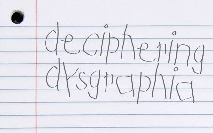

Dysgraphia is a term that refers to trouble with writing. Many experts view dysgraphia as challenges with a set of skills known as transcription. These skills
handwriting
typing
spelling
Trouble expressing your thoughts in writing isn’t formally recognized as part of dysgraphia. That’s a learning disability known as written expression disorder . But when people struggle with transcription, it can get in the way of thinking about ideas and how to convey them.
For example, people with dysgraphia may write more slowly than others. That can affect how well they express themselves in writing. Plus, they tend to have trouble with spelling because it’s hard for them to form letters when they write.
Dysgraphia isn’t a matter of intelligence. The challenges are often caused by trouble with motor skills. Those skills can improve with help. And people with dysgraphia may also be eligible to use accommodations at work or school.

One of the main signs of dysgraphia is messy handwriting. Here are some of the key handwriting skills people with dysgraphia may struggle with: